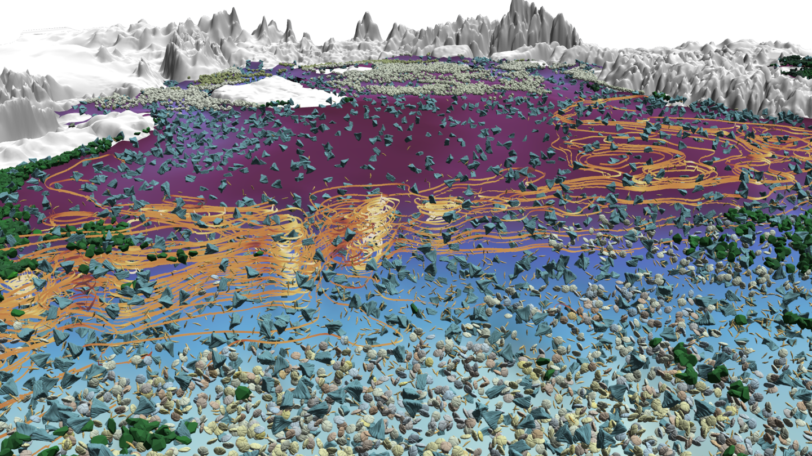

Artifact-Based Rendering Engine

Getting Started
- Installation Guide
- Introduction and Overview
- Key classes organized by theme / functionality
- Core concepts
About ABR
We introduce Artifact-Based Rendering (ABR), a framework of tools, algorithms, and processes that makes it possible to produce real, data-driven 3D scientific visualizations with a visual language derived entirely from colors, lines, textures, and forms created using traditional physical media or found in nature. A theory and process for ABR is presented to address three current needs: (i) designing better visualizations by making it possible for non-programmers to rapidly design and critique many alternative data-to-visual mappings; (ii) expanding the visual vocabulary used in scientific visualizations to depict increasingly complex multivariate data; (iii) bringing a more engaging, natural, and human-relatable handcrafted aesthetic to data visualization. New tools and algorithms to support ABR include front-end applets for constructing artifact-based colormaps, optimizing 3D scanned meshes for use in data visualization, and synthesizing textures from artifacts. These are complemented by an interactive rendering engine with custom algorithms and interfaces that demonstrate multiple new visual styles for depicting point, line, surface, and volume data. A within-the-research-team design study provides early evidence of the shift in visualization design processes that ABR is believed to enable when compared to traditional scientific visualization systems. Qualitative user feedback on applications to climate science and brain imaging support the utility of ABR for scientific discovery and public communication.
This Unity package provides features and functionality for the Artifact-Based Rendering technique. To learn more, check out the following associated publications:
Key Publications
Artifact-Based Rendering: Harnessing Natural and Traditional Visual Media for
More Expressive and Engaging 3D Visualizations
Seth Johnson, Francesca Samsel,
Gregory Abram, Daniel Olson, Andrew J. Solis, Bridger Herman, Phillip J.
Wolfram, Christophe Lenglet, and Daniel F. Keefe. IEEE Transactions on
Visualization and Computer Graphics 26, 1, 492-502.
2019.
This paper originally introduced the concept and
first implementation of ABR.
Printmaking, Puzzles, and Studio Closets: Using Artistic Metaphors to Reimagine
the User Interface for Designing Immersive Visualizations
Bridger Herman,
Francesca Samsel, Annie Bares, Seth Johnson, Greg Abram, and Daniel F Keefe. In
IEEE VIS Arts Program (VISAP).
19–28.
This paper introduced the web-based ABR design interface.
Poster: Automatic Generation of Data Legends for Multi-Variate Artist Driven
Visualizations
Claire Weissman, Bridger Herman, Stephanie Zeller, Francesca
Samsel, and Daniel F. Keefe. IEEE VIS, 2020.
Posters.
SciVis Best Poster Award.
This poster introduced an approach for automatically generating legends for ABR.
Other publications using ABR
Mingling art and science opens minds
Feder, T., Physics Today, 74(4),
pp.24-29. 2021.
The photo seen at the top
of this page was produced for this article.